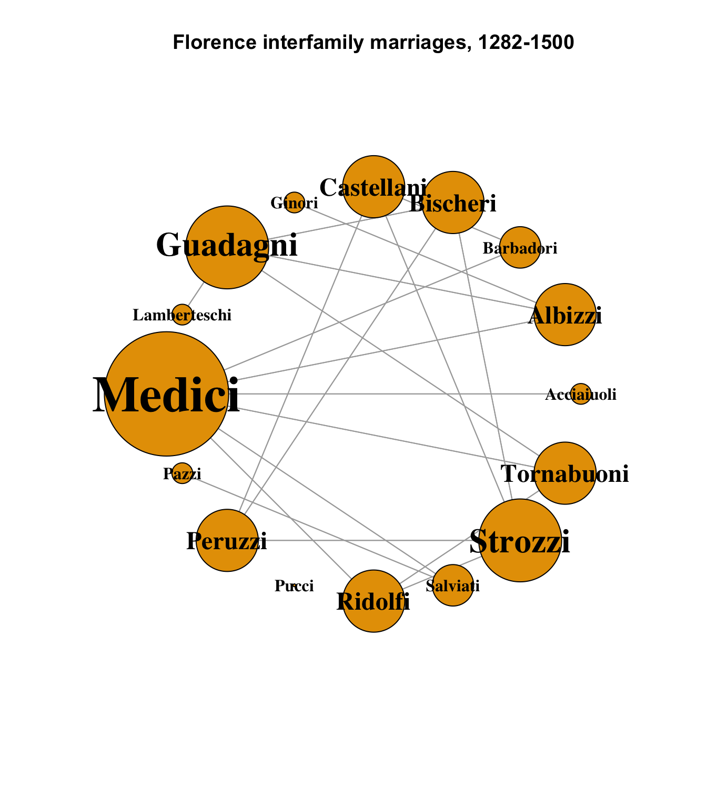
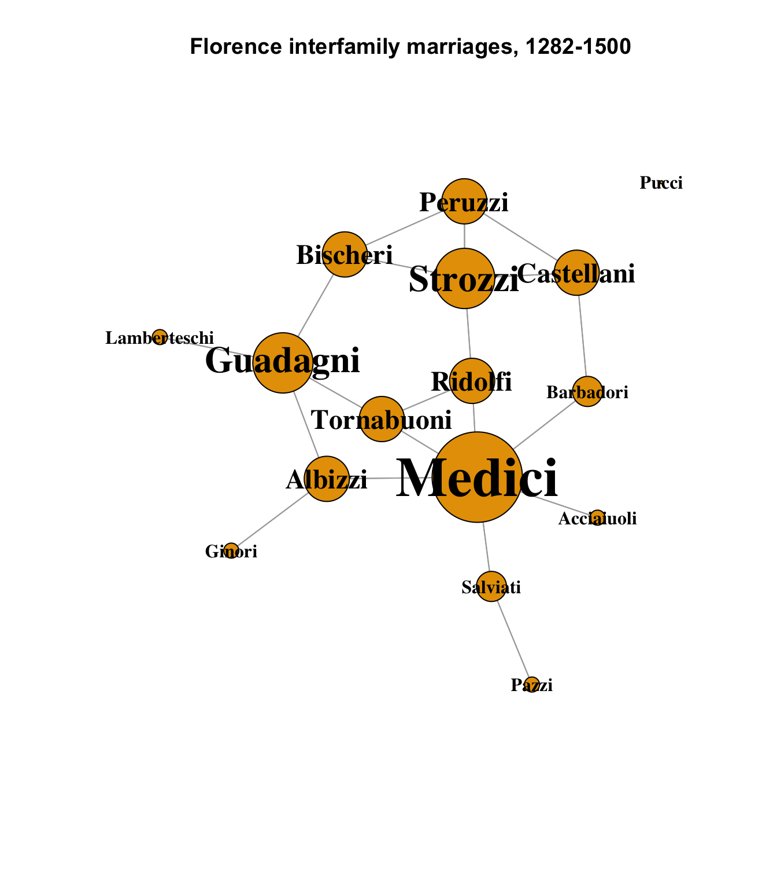

data(flo)
ntwk.ig <- graph_from_adjacency_matrix(flo)
ntwk.vcount <- vcount(ntwk.ig)
ntwk.ecount <- ecount(ntwk.ig)
ntwk.is_bipartite <- is_bipartite(ntwk.ig)
ntwk.is_directed <- is_directed(ntwk.ig)
ntwk.is_weighted <- is_weighted(ntwk.ig)
ntwk.vertex_attr_names <- vertex_attr_names(ntwk.ig)
ntwk.edge_attr_names <- edge_attr_names(ntwk.ig)
ntwk.names <- V(ntwk.ig)$name
ntwk.dyad_census <- igraph::dyad.census(ntwk.ig)
ntwk.triad_census <- igraph::triad_census(ntwk.ig)
ntwk.global_clustering_coef <- transitivity(ntwk.ig, type = "global")
ntwk.local_avg_clustering_coef <- transitivity(ntwk.ig, type = "average")
ntwk.avg_path_length <- average.path.length(ntwk.ig, directed = T)
ntwk.component_names <- names(igraph::components(ntwk.ig))
ntwk.components_no <- igraph::components(ntwk.ig)$no
ntwk.components_csize <- igraph::components(ntwk.ig)$csize
# distances(ntwk.ig,"Acciaiuoli","Strozzi", weights=NA)
ntwk.graph_density <- graph.density(ntwk.ig)
ntwk.graph_density_noloops <- graph.density(ntwk.ig, loops = TRUE)
ntwk.avg_degree <- igraph::degree(ntwk.ig)
# Get the degree info and make the data frame
ntwk.nodes <- data.frame(
name = V(ntwk.ig)$name,
degree = igraph::degree(ntwk.ig),
indegrees = igraph::degree(ntwk.ig, mode = "in", loops = FALSE),
outdegrees = igraph::degree(ntwk.ig, mode = "out", loops = FALSE)
)
# ntwk.nodes[ntwk.nodes$name %in% c("Medici", "Strozzi"),]
# Get degree centralization
ntwk.indegree_centralization <-
centr_degree(ntwk.ig, loops = FALSE, mode = "in")$centralization
ntwk.outdegree_centralization <-
centr_degree(ntwk.ig, loops = FALSE, mode = "out")$centralization
ntwk.total_centralization <-
centr_degree(ntwk.ig, loops = FALSE, mode = "total")$centralizationHomework 3: The Florentine Wedding dataset
r
social networks
A first-look network analysis
For this assignment, I am looking at the Florentine Wedding dataset by J. F. Padgett, representing intermarriages between prominent families in Florence between 1282 and 1500. This is an area of interest to me as I have some background in fine art, and the Medici family in particular was known for its patronage of some of history’s greatest artists throughout the Renaissance, including Boticelli, Leonardo da Vinci, and Michelangelo. No less than Galileo Galilei himself tutored several generations of Medici children.
The great families of this era were frequently fierce rivals, with delicately balanced power structures measured in various spheres of influence; intermarriages were one way that alliances were forged between families in the ceaseless effort to gain political or financial advantage over their competitors.
The Medici family was the most prominent in Florence throughout the renaissance. Two other prominent families, the Strozzi and Guadagni, also exercised considerable influence (they were all banking families), and did not intermarry with the Medici, though they were not far removed. This essay looks at the marriage network between the various families as one measure of social power and centrality in Renaissance Florence.
The flo dataset in the R network library is an adjacency matrix of 16 families of this era, including the aforementioned. It contains the 16 nodes of the families, and 20 unweighted, directed edges between them. The Pucci family is an isolate, making the network disconnected; the remaining nodes form a single component.
The families in the dataset, with their total intermarriage count (degree), marriages into each family (indegrees) and marriages out to other families (outdegrees) are:
ntwk.nodes[,c("degree", "indegrees", "outdegrees")] degree indegrees outdegrees
Acciaiuoli 2 1 1
Albizzi 6 3 3
Barbadori 4 2 2
Bischeri 6 3 3
Castellani 6 3 3
Ginori 2 1 1
Guadagni 8 4 4
Lamberteschi 2 1 1
Medici 12 6 6
Pazzi 2 1 1
Peruzzi 6 3 3
Pucci 0 0 0
Ridolfi 6 3 3
Salviati 4 2 2
Strozzi 8 4 4
Tornabuoni 6 3 3A visualization shows each marriage as a line connecting two families:
V(ntwk.ig)$size <- ntwk.nodes[,"degree"] * 5
V(ntwk.ig)$label.cex <- ntwk.nodes[,"degree"] / 4
V(ntwk.ig)$label.cex <- pmax(V(ntwk.ig)$label.cex, 1)
plot(
ntwk.ig,
layout = layout_in_circle(ntwk.ig),
edge.arrow.mode = 0,
vertex.label.color = "black",
vertex.shape = "circle",
vertex.label.font = 2,
main = "Florence interfamily marriages, 1282-1500"
)
Each node is sized according to its number of connections; it is easy to see from this diagram that the Medici family had the most marriages within the Florence family network, with six. The Strozzi and Guadagni families were next at four apiece.
A component layout offers a different view that makes distances and paths easier to read:
set.seed(1235)
V(ntwk.ig)$size <- ntwk.nodes[,"degree"] * 3
plot(
ntwk.ig,
layout = layout_components(ntwk.ig),
edge.arrow.mode = 0,
vertex.label.color = "black",
vertex.shape = "circle",
vertex.label.font = 2,
main = "Florence interfamily marriages, 1282-1500"
)
From this layout, we can see that the Medici, Strozzi and Guadagni never directly intermarried, but were also only separated from each other by one node. With an overall average path length of approximately 2.5, this suggests some calculus and deliberation: not directly joining with their main rivals, but remaining only one degree removed.
The overall network density is \(\approx\) 0.16; 20 connections by marriage out of a possible total of 120. Four of the 16 nodes are pendants. We might expect the network density to increase if we looked at more families than the 16 listed here; it is very unlikely that only 16% of families experienced any marriages at all! This would need to be weighed against the prominence of the additional families according to the criteria with which this initial set was selected.
It would be interesting to me to look deeper into a bipartite network of connections between the families and whom they patronized, especially the artists and scientists of the era. This would require more data than is present in this set, but could be very revealing about other ways in which the families interacted, competing for social and political influence in the dynamic period of the Renaissance.